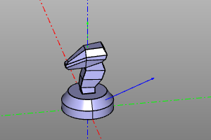
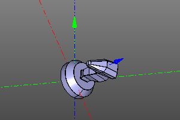
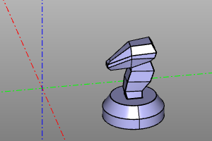
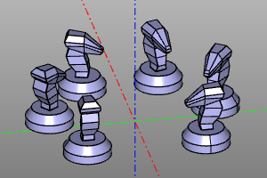
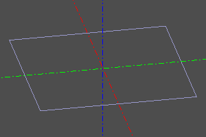
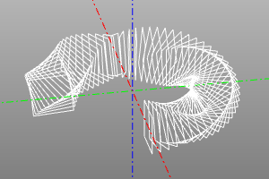
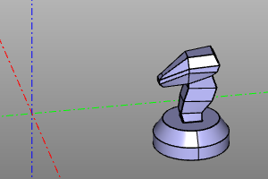
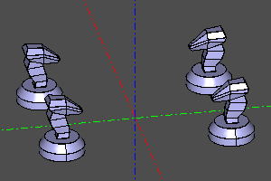

Affine transformations.
The ZenCad paradigm assumes that most of the objects appear at the origin, and then move to their destination using the transformation mechanism.
Usually, when working with geometry, transformations are performed using methods of the Shape class (representing geometric bodies), but for building complex transformations or working with animation, affine transformations can also be created as separate objects.
Affine transformations in ZenCad are represented by objects of the Transformation class (homogeneous transformations) and the GeneralTransformation class (general affine transformation). Objects of these classes are generated by the family of functions described later in this section.
It should be remembered that general transformations are computationally more complicated and can greatly change the internal representation of a geometric object.
From a mathematical point of view, transformation objects are linear operators and some operations of linear algebra are admissible relative to them. The corresponding functionality of the library is described in the section "Operations on transformations".
Functions for working with transformations and special types of transformations are described in the "Additional transformations" section.
Basic conversions.
There are four basic transformations: rotation, translation, scaling, and flip.
Rotate
Rotation of the body around the axis specified by the vector v and passing through the origin at the angle a.
If the angle a is not specified, then the radian measure is taken as the angle of rotation, which is numerically equal to the modulus of the vector v.
Methods for transformable geometric objects:
# Основной синтаксис:
shp.rotate([x,y,z], a=None)
shp.rotate(x,y,z)
shp.rotateX(x)
shp.rotateY(y)
shp.rotateZ(z)
# Сокращенный синтаксис:
shp.rot([x,y,z], a=None)
shp.rot(x,y,z)
shp.rotX(x)
shp.rotY(y)
shp.rotZ(z)
Создание объекта трансформации:
rotate([x,y,z], a=None)
rotate(x,y,z)
rotateX(x)
rotateY(y)
rotateZ(z)
Parallel transfer of the body to the vector (x, y, z). For historical reasons (in particular for compatibility with OpenScad), the zencad library has two synonymous families of functions / methods translate and move, as well as their mnemonic designations.
Methods for transformable geometric objects:
# Основной, альтернативный, мнемонический синтаксис:
shp.translate(x=0,y=0,z=0)
shp.translate([x,y,z])
shp.move(x=0,y=0,z=0)
shp.move([x,y,z])
shp.moveX(x)
shp.moveY(y)
shp.moveZ(z)
shp.right(x) # moveX(+x)
shp.left(x) # moveX(-x)
shp.forw(y) # moveY(+y)
shp.back(y) # moveY(-y)
shp.up(z) # moveZ(+z)
shp.down(z) # moveZ(-z)
# Сокращенный синтаксис:
shp.movX(x)
shp.movY(y)
shp.movZ(z)
Creating a transformation object:
# Основной синтаксис:
translate(x=0,y=0,z=0)
translate([x,y,z])
# Альтернативный синтаксис:
move(x=0,y=0,z=0)
move([x,y,z])
moveX(x)
moveY(y)
moveZ(z)
# Мнемонический синтаксис:
right(x) # moveX(+x)
left(x) # moveX(-x)
forw(y) # moveY(+y)
back(y) # moveY(-y)
up(z) # moveZ(+z)
down(z) # moveZ(-z)
shp.scale(a)
shp.scaleX(a)
shp.scaleY(a)
shp.scaleZ(a)
Creating a transformation object:
scale(a)
scaleX(a) # general_transformation
scaleY(a) # general_transformation
scaleZ(a) # general_transformation
scaleXYZ(x,y,z) # general_transformation
Reflection
The operation of flipping geometry about a point on an axis passing through the origin or a plane passing through the origin.
When flipping about a point, the coordinates of the transformation center are set. When reflected about the axis, the vector of the transformation axis is specified. When reflecting relative to a plane, the normal vector of the reflecting plane is specified.
Methods for transformable geometric objects:
# Отражение относительно центра.
shp.mirrorO(x=0,y=0,z=0)
shp.mirrorO([x,y,z])
# Отражение относительно оси.
shp.mirror_axis(x,y,z)
shp.mirror_axis([x,y,z])
shp.mirrorX() # equal to mirror_axis(1,0,0)
shp.mirrorY() # equal to mirror_axis(0,1,0)
shp.mirrorZ() # equal to mirror_axis(0,0,1)
# Отражение относительно плоскости.
shp.mirror_plane(x,y,z)
shp.mirror_plane([x,y,z])
shp.mirrorXY() # equal to mirror_axis(0,0,1)
shp.mirrorYZ() # equal to mirror_axis(1,0,0)
shp.mirrorXZ() # equal to mirror_axis(0,1,0)
Creating a transformation object:
# Отражение относительно центра.
mirrorO(x=0,y=0,z=0)
mirrorO([x,y,z])
# Отражение относительно оси.
mirror_axis(x,y,z)
mirror_axis([x,y,z])
mirrorX() # equal to mirror_axis(1,0,0)
mirrorY() # equal to mirror_axis(0,1,0)
mirrorZ() # equal to mirror_axis(0,0,1)
# Отражение относительно плоскости.
mirror_plane(x,y,z)
mirror_plane([x,y,z])
mirrorXY() # equal to mirror_axis(0,0,1)
mirrorYZ() # equal to mirror_axis(1,0,0)
mirrorXZ() # equal to mirror_axis(0,1,0)
Operations on transformations.
Affine transformations are linear operators and some linear algebra operations can be performed with respect to them.
Composition.
Compositions of affine transformations are performed using the multiplication operator. It should be noted that compositions of affine transformations are non-commutative.
Transformation compositions should be read from right to left. For example, in the example below, the entry moveX (20) * rotateZ (deg (60)) Means that we first rotate 60 degrees, and then do a parallel translation along the X axis by 20 units.
Example:
trans = moveX(20) * rotateZ(deg(60))
m = zencad.internal_models.knight()
disp(trans(m))
# alternate: box(5, center=True).rotZ(deg(60).movX(20)
| Before | After |
|---|---|
 |
 |
Inversion.
Computing the inverse transformation.
Signature:
trsf.inverse()
Example:
trans = rotateZ(deg(45))
m = zencad.internal_models.knight()
disp(trans(m), color.green)
disp(trans.inverse()(m), color.red)
| Conversion | Inversion |
|---|---|
 |
 |
Example:
trans = moveX(20) * rotateZ(deg(45))
m = zencad.internal_models.knight()
disp(trans(m), color.green)
disp(trans.inverse()(m), color.red)
| Conversion | Inversion |
|---|---|
 |
 |
Note. The inversion of the composition of transformations can be calculated as:
(A * B)-1 = B-1 * A-1
Additional transformations.
Converting to itself.
A special transformation that does not alter the object in any way.
nulltrans()
|---|---|
|  | |
| |
Minimum turn.
This transformation corresponds to the minimum rotation from the vector f to the vector t.
Signature:
short_rotate(f, t)
Example:
short_rotate((0,0,1), (1,1,1))(zencad.internal_models.knight())
| Before | After |
|---|---|
|  |  |
Multiple transformation.
Performs a multiple transformation operation of the prototype onto an array of transformation objects transes. At the same time, if the options array and unit are inactive, the result is booleanly concatenated. If array is active, an array of results will be returned. When the unit option is activated, an assembly unit based on the array of results will be returned.
Multiple transform operation can be performed on interactive objects and assembly units. In this case, the transformation object is copied as many times as necessary. The return occurs in the form of a unit that unifies the copy or in the form of an array with the array option active. The unit option has no effect on anything.
Signature:
multitrans(transes, unit=False, array=False)
Example:
def extrans(): return multitransform([
translate(-20,20,0) * rotateZ(deg(60)),
translate(-20,-20,0) * rotateZ(deg(120)),
translate(20,20,0) * rotateZ(deg(180)),
nulltrans()
])
disp(extrans(zencad.internal_models.knight()))
| Before | After |
|---|---|
 |
 |
Circular array.
Multiple transform that produces a circular array of n objects over the angular range of yaw. The endpoint parameter is responsible for including the last point of the linear space of the corners. (parameters array, unit - see Multiple conversion.)
Signature and conversion code:
def rotate_array(n, yaw=deg(360), endpoint=False, array=False, unit=False):
lspace = np.linspace(0, yaw, num=n, endpoint=endpoint)
transes = [ rotateZ(a) for a in lspace ]
return multitrans(transes, array=array, unit=unit)
Примеры:
m = zencad.internal_models.knight().move(20,20)
rotate_array(6, yaw=deg(270, endpoint=True)
| Before | After |
|---|---|
|  |  |
Circular pattern with additional roll.
Multiple transform that produces a circular array of n objects over the angular range of yaw. The endpoint parameter is responsible for including the last point of the linear space of the corners. (parameters array, unit - see Multiple conversion.)
The roll option specifies the roll interval of the body around the rotation path.
Unlike rotatearray, it has slightly different semantics for working with the original object. In _rotatearray2, the original object is initially located at the origin, then rotated 90 degrees around the X axis and shifted along the X axis by a distance equal to the radius of _r.
Signature:
rotate_array2(
n, r=None,
yaw=(0,deg(360)), roll=(0,0),
endpoint=False, array=False, unit=False)
Example:
rotate_array2(
n=60,
r=20,
yaw=(0,deg(270)),
roll=(0,deg(360)),
array=True)(
square(10, center=True, wire=True)
)
| До | После |
|---|---|
|  |  |
Square reflection.
Completes 3 reflections of the original object.
Signature and conversion code:
def sqrmirror():
return multitransform([nulltrans(), mirrorYZ(), mirrorXZ(), mirrorZ()])
Example:
sqrmirror(knight.move(20,30))
| Before | After |
|---|---|
|  |  |